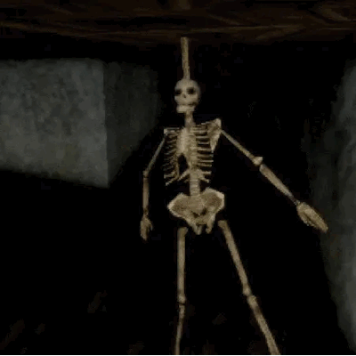

Bueno chiques no quedé ni en la santa maria ni en la cato, PERO quedé en la udp, que igual no es mala, no me esncanta la estructura de la U como tal, y me queda mas lejitos, pero bueno, al menos así veo otros lares 🗣🗣🗣🗣🗣
Pero bueno mi gente latino, eso, ya me mentalicé que estudiaré ahí, y pues ta weno we, no me quejo🗣🗣🗣🗣
